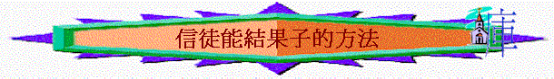

約
15:1-12引言
:15:1
提及樹,有沒有種過樹/植物? 最後成功成長嗎? 你認為植物成長/能結果子的秘訣在於什麼? 信徒又如何? 我們嘗試查考以下經文找出信徒成長/能結果子的方法一.連於真葡萄樹
(15:1)1.15:1
提及[我]是指誰? 主強調自己是什麼? 你又想我們又是什麼? 為何主要強調祂是[真]的?2.
若枝子連於假的葡萄樹,結果會怎樣?3.
有沒有見過一些人自稱是基督徒,但你覺得他是信錯了/假的?4.
若我們今天自認是信徒,但不是連於真的主---基督,會有什麼後果?二.有父神的栽培
(15:1)1.15:1
提及父神又是什麼角色?2.
何謂[栽培]?3.
今日我們信了主,需不需要人栽培? 你信仰的成長,又有沒有人[栽培]你呢?4.
但真正使你成長的是誰?三.有結果子的心
(15:2,16)1.你認為不結果子的枝子有什麼用
?2. 15:2
又提及屬神不結果的人有什麼後果? 剪去是什麼意思?3.對信徒來說
,結果子是什麼意思?4.加
5:22又形容我們有什麼果子? 你自己最想有的特質是什麼?5.另外
,15:16又提到結果,你猜想除了指自己生命的果子外,又指什麼?6.你信主後
,多不多領身邊的人信主/返教會? 為什麼?四,被主耶穌修理
1.15:2
提到修理,有沒有見見過人修理植物? 目的是什麼?2.
今日信徒要被主修理是什麼意思? 目的又是什麼?3.
你認為自己的生命完全嗎? 你是否願意被主修理? 有什麼不好的性格/習慣/不完全的事需被主修剪?(15:3)
五.靠主道得乾淨
1.15:3
主用什麼使我們得乾淨?2.
最近,有沒有一些真理/主的話,幫助你的生命更完全/提醒你? 試分享3.
你期望在新的學年,如何追求主的話?六
.要常在主裡面(15:4-12)1.15:4
提及枝子不常在葡萄樹,有什麼後果?2.
我們又要怎樣? 何謂常在主裡面?3.15:6
不常在主裡面有什麼惡果? 主用什麼比喻表達不常在主裡面的惡果? 什麼意思? 一個信徒有什麼行為及表現,是可表達不常在主裡面?4. 15:5,15:7-8
人常在主裡面,有什麼結果?5.
你認為人如何可以常在主裡面? 15:10又怎說?6.
主曾經對我們有什麼命令? 15:12又怎說?7.
你與團友的關係是怎樣?(1-10分) 如何可以實踐彼此相愛?
總結:一個信徒要怎樣才成長/結豐盛果子?